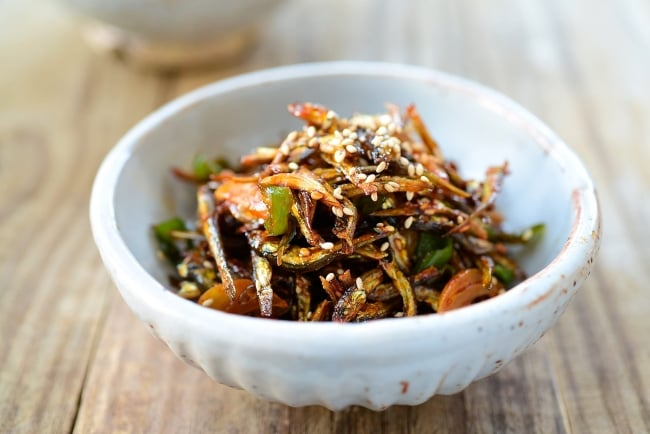

Candied Anchovies

Korean-style Anchovies stir-fried and served as a side
This sweet side dish is a great and easy way to incorporate anchovies into your diet!
15-min is all you need to make and prepare this "banchan" staple.
Ingredients:
- Dried anchovies, 1 cup
- Granulated sugar, 1 Tbsp
- Soy sauce, 1 Tbsp
- Syrup, 1 Tbsp
- Toasted sesame seeds, 1 Tsp
- Sesame seed oil, 1 Tbsp
Steps:
- Toast the dried anchovies in a pan, without any oil. Toast for around 5 minutes.
- Prepare the marinade sauce:
- Combine the sugar, soy sauce, and the syrup in a bowl
- Mix well, until homogenous.
- Add in oil to the pan, frying the anchovies until the desired texture is reached.
- Gather the fried anchovies to the side, and cook off the marinade in the open spot.
- Once the marinade has been cooked out and is bubbling, combine with the anchovies.
- Mix and toss well to incorporate the sauce into the anchovies.
- Add the sesame seed oil and seeds, and toss yet again to mix.
- Remove from pan, and let cool. Serve room-temperature.